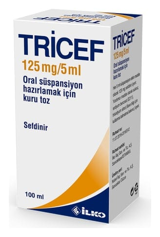

Tricef 125 mg/5 ml Oral Süspansiyon Hazırlamak İçin Kuru TOZ,100 ml

Ne için kullanılır
KT · Bölüm 1TRİCEF ağız yolu ile kullanılan ve sefalosporin olarak bilinen antibiyotik ilaç grubuna dahil olan sefdinir etkin maddesini içermektedir.
TRİCEF, süspansiyon oluşturmak üzere açık krem renkli, çilek kokulu granüler yapıda kuru toz içeren, kilitli kapak sistemine sahip 125 ml'lik (100 ml işaretli) amber renkli tip III cam şişe ve ölçekli oral şırınga (1 ml, 2.5 ml ve 5 ml işaretli) ile birlikte karton kutu ambalajlarda takdim edilir.
TRİCEF bakterilerin (mikropların) neden olduğu aşağıdaki enfeksiyonların (iltihap oluşturan mikrobik hastalık) tedavisinde kullanılır:
Ergen ve yetişkinlerde: a. Toplum kökenli akciğer iltihabı (zatürre, pnömoni), b. Kronik bronşit iltihabının akut alevlenmesi, c. Yüz kemiklerinin içindeki hava boşluklarının akut iltihabı (akut bakteriyel sinüzit), d. Bademcik (tonsillit)/ yutak (farenjit) iltihabı,
Not: Sefdinir orofarenksten S.pyogenes’i eradike etmede etkindir. Bununla birlikte sefdinir S.Pyogenes farenjit/tonsillit sonrası romatizmal ateşin önlenmesinde sadece intramüsküler penisilinin etkili olduğu gösterilmiştir. e. Komplike olmayan cilt ve yumuşak doku iltihapları.
Çocuklarda: a. Orta kulak iltihabı (akut otitis media), b. Bademcik (tonsillit)/ yutak (farenjit) iltihabı, Not: Sefdinir orofarenksten S.pyogenes’i eradike etmede etkindir. Bununla birlikte sefdinir S.Pyogenes farenjit/tonsillit sonrası romatizmal ateşin önlenmesinde sadece intramüsküler penisilinin etkili olduğu gösterilmiştir. c. Komplike olmayan cilt ve yumuşak doku iltihapları.
2. TRİCEF’i kullanmadan önce dikkat edilmesi gerekenler TRİCEF’i aşağıdaki durumlarda KULLANMAYINIZ Eğer; • Sefdinire, diğer sefalosporinlere ya da ilacın içeriğindeki yardımcı maddelerden herhangi birine alerjiniz var ise TRİCEF’i kullanmayınız.
TRİCEF’i aşağıdaki durumlarda DİKKATLİ KULLANINIZ Eğer; • Sefdinir kullanımına bağlı olarak psödomembranöz kolit (karın ağrısı ve ateşle beraber, ciddi, inatçı, kanlı da olabilen ishal) ortaya çıkar ise, (TRİCEF kullanımı sırasında veya sonrasında şiddetli ishal meydana gelir ise ishal önleyici ilaçlar almayınız ve durumu derhal doktorunuza bildiriniz) • Böbrek yetmezliğiniz var ise, (bkz bölüm 3’ teki özel kullanım durumları) • Penisilinlere karşı bildiğiniz bir aşırı duyarlılık durumunuz var ise (sefalosporinlere de aşırı duyarlılık durumunuz olabileceğinden durumu doktorunuza bildiriniz)
Bu uyarılar, geçmişteki herhangi bir dönemde dahi olsa sizin için geçerliyse lütfen doktorunuza danışınız.
TRİCEF’in yiyecek ve içecek ile kullanılması TRİCEF yemeklerden önce ya da sonra kullanılabilir.
Hamilelik İlacı kullanmadan önce doktorunuza veya eczacınıza danışınız.
TRİCEF gerekli olmadıkça gebelik döneminde kullanılmamalıdır. Başka ilaçlarda olduğu gibi, ilacın hamilelik sırasındaki kullanımı sadece beklenen yararın cenin üzerindeki riskten yüksek olduğu durumlarda ve doktor tavsiyesi ile kullanılmalıdır.
Tedaviniz sırasında hamile olduğunuzu fark ederseniz hemen doktorunuza danışınız.
Emzirme İlacı kullanmadan önce doktorunuza veya eczacınıza danışınız.
TRİCEF’in anne sütüne geçtiği saptanmamıştır. Ancak anne sütü alan çocuk açısından bir risk olduğu göz ardı edilemez. Doktorunuz tarafından yarar zarar oranı değerlendirilerek uygulanmalıdır.
Araç ve makine kullanımı TRİCEF’in araç ve makine kullanımı üzerine etkisi olduğu bildirilmemiştir.
TRİCEF’in içeriğinde bulunan bazı yardımcı maddeler hakkında önemli bilgiler TRİCEF’in günlük maksimum dozu olan 24 ml’sinde 46,5 mg sodyum içerir. Bu durum, kontrollü sodyum diyetinde olan hastalar için göz önünde bulundurulmalıdır. TRİCEF, sukroz içermektedir. Bu nedenle eğer daha önceden doktorunuz tarafından bazı şekerlere karşı intoleransınız olduğu söylenmişse bu tıbbi ürünü almadan önce doktorunuzla temasa geçiniz.
Diğer ilaçlar ile birlikte kullanımı • TRİCEF antiasitler (midenin aşırı asidini azaltan ilaçlar) ile birlikte alınırsa antiasitler sefdinirin emilimini azaltır. Eğer sefdinir tedavisi süresince antiasitler kullanılacak ise TRİCEF antiasitlerin kullanılmasından en az 2 saat önce ya da sonra alınmalıdır. • Gut hastalığı (damla hastalığı) tedavisinde de kullanılan probenesid, TRİCEF’in böbreklerden atılma süresini uzatarak kandaki yoğunluğunun artışına neden olur. Bu ilacı kullanıyorsanız doktorunuza bildiriniz. • Demir içeren ilaçlar ve yiyecekler TRİCEF’in emilimini azaltır. TRİCEF tedavisi sırasında demir içeren ilaçlar kullanılacak ise her iki uygulamanın arasında en az 2 saat olmalıdır. Özellikle demir içeren ilaç veya yiyeceklerle beraber kullanıldığında dışkı rengi kırmızı olabilmektedir (Bu renk değişikliği normal olarak değerlendirilmektedir). • TRİCEF kullanımı bazı laboratuvar testlerinin sonuçlarını etkileyebilir.
Eğer reçeteli ya da reçetesiz herhangi bir ilacı şu anda kullanıyorsanız veya son zamanlarda kullandınız ise lütfen doktorunuza veya eczacınıza bunlar hakkında bilgi veriniz.